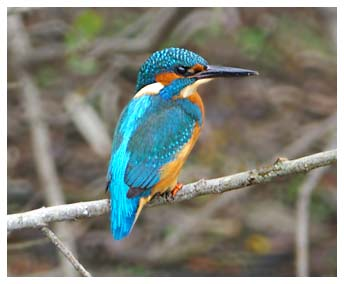

Kingfisher
Resident bird at the reservoir but in very small numbers, usually 1 or 2 birds. Breeds nearby.

17/06/26 - Bred. Young were seen.
1964 - Winter records.
1966 - Recorded.
1967 - Recorded.
No records available between 1968 & 1983.
1984 - Single bird regularly during Summer & Autumn.
10/08/84 - 2 birds.
1985 - Present.
19/10/88 - 2 birds.
1989 - Present.
01/11/90 - Single bird.
18/08/91 - Single bird.
08/12/91 - Single bird.
1992 - 2 birds during November & December.
10/01/93 - Single bird.
07/01/94 - Single bird.
20/10/94 - At least 1 bird present from this date forward.
14/01/95 - 2 birds.
1996 - 2 birds seen on many dates from September onward.
1997 - 2 birds seen from July onward, to the end of the year. Bred in nearby outlet stream.
1998 - 2 birds seen regularly.
27/02/98 - 3 birds. Adult male & female & a 1st year bird.
02/08/98 - Adult feeding young.
29/03/99 - Single bird
05/06/99 - Single bird. Seen also through July, August, September & October
??/11/99 - 2 birds
??/12/99 - Single bird
2000 - One or two throughout the year
2001 - One or two throughout the year
2002 - One or two throughout the year with up to 3 in July, August and September
2003 - One or two throughout the year with up to 3 in July, August and September
2004 - One or two throughout the year with up to 3 in August and September and also 3 on 14/03
2005 - One or two throughout the year
2006 - Single on 07/01 then none until 05/07 when 1 or 2 until 17/11. None in December
2007 - None until 17/06 then 1 or 2 for the rest of the year with up to 3 during July and August
2008 - One or two most of the year with 3 on 28/01/08
2009 - Up to 3 most of year (not April/May)
2010 - One or two seen throughout the year
2011 - Up to 3 seen through the year
2012 - Up to 3 recorded on 60 dates. None in March or April.
2013 - One or two recorded on 79 dates. None in May
2014 - Up to 3 recorded on 157 dates
2015 - Up to 3 recorded on 146 dates
2016 - Up to 3 recorded on 142 dates (seen in every month)
2017 - Up to 3 recorded on 95 dates
2018 - Up to 3 recorded on 86 dates (not seen in March, April or May)
2019 - Up to 3 recorded on 99 dates throughout the year apart from May
2020 - One or two recorded on 106 dates throughout the year apart from May
2021 - One or 2 recorded on 73 dates with 3 on 12/09. None in April or May
2022 - Up to 4 recorded on 109 dates
2023 - One or 2 recorded on 77 dates in every month of the year
2024 - Up to 3 recorded on 112 dates. None in May
2025 - Up to 3 recorded on 122 dates. None in March